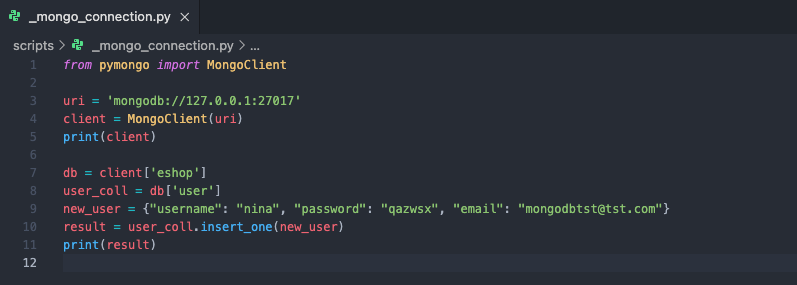
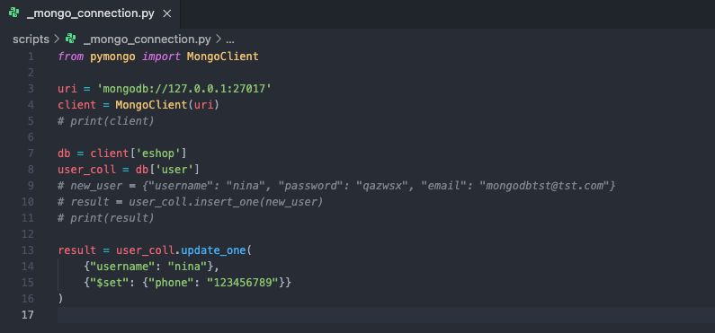
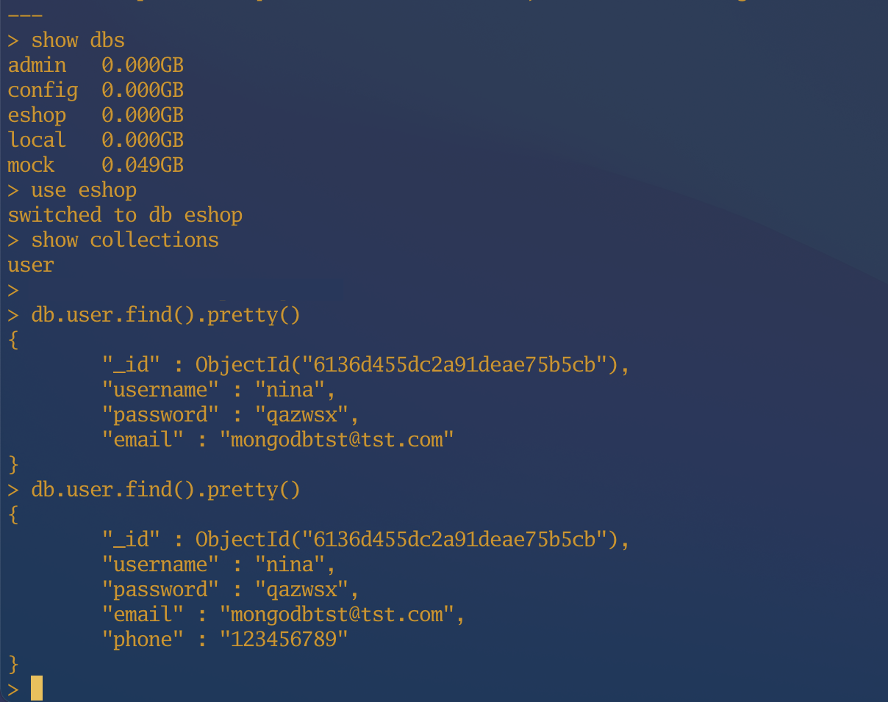

MongoDB - Usage
Contents
MongoDB - Usage¶
MongoDB+Pythonの組み合わせで、前編で述べたDBにアクセス、データの作成、更新をコードを書きながら手を動かし、把握していく。
デモ: MongoDB+Python(現時点で ver3.9.6)¶
2. アクセス方法(ローカルサーバ)¶
mongodb://{DBサーバ(127.0.0.1)}:{ポート番号(27017)}
_mongo_connection.py を作成する。以下のコードで実行してみる。
from pymongo import MongoClient
uri = 'mongodb://127.0.0.1:27017'
client = MongoClient(uri)
print(client)
3. 作成¶
予めDB、コレクション、ドキュメントを作成していない前提とし、下記のコードを実行してもエラーが起こられない。
DB(eshop)、コレクション(user)、ドキュメント(username…)が存在していない場合、MongoDBが自動的に作成してくれる。
db = client['eshop']
user_coll = db['user']
new_user = {"username": "nina", "password": "qazwsx", "email": "mongodbtst@tst.com"}
result = user_coll.insert_one(new_user)
print(result)
実際、_mongo_connection.pyはこのようになる。  「2. アクセス方法」の最後に、注意事項で述べたことを作成する前に再現する。
手動でbrew services stop mongodb-communityコマンドを叩いて実行し、エラーが返された。
そして、brew services restart mongodb-communityで再起動して実行した結果。
参照：Error: couldn’t connect to server 127.0.0.1:27017
サーバを再起動してから、
<pymongo.results.InsertOneResult object at 0x102f81f00>
が返された。実際DB上はどうなっているのかを確認する。 DB(eshop)、コレクション(user)、ドキュメントがローカルサーバに存在してなかったが、ただ数行のコマンドで作成された。SQLの場合は、…まずDBを作るからスタートしないとね。
4. 更新¶
指定したfieldがなくても、自動的に作成される。 本来のコレクションの構造が変更されない。
result = user_coll.update_one(
{"username": "nina"},
{"$set": {"phone": "123456789"}}
)
上記を_mongo_connection.pyに追記して、不要な出力(option)と作成部分をコメントアウトする。

実行してからDBを確認する。 下図のように、”phone”というfieldは更新する前には、存在してなかった。

所感¶
今回MongoDB+Pythonを動かしてみて、必要なソースコードがそのように少ないと思ってなかった。従来使い慣れきたSQLより、シンプル！と感じた。ほかの魅力はまだあるが、本文はここまでにする。
おまけ - MongoDB+Go(現時点で ver1.16.5)¶
ローカルサーバにアクセスする方法¶
上記のPythonデモと同様、GoでMongoDBのローカルサーバに接続するとき、ソースコードはどのようになるのかをみてみよう。 参照：MongoDB Go Driver
package main
import (
"context"
"fmt"
"time"
"go.mongodb.org/mongo-driver/mongo"
"go.mongodb.org/mongo-driver/mongo/options"
"go.mongodb.org/mongo-driver/mongo/readpref"
)
func main() {
// Replace the uri string with your MongoDB deployment's connection string.
uri := "mongodb://localhost:27017"
ctx, cancel := context.WithTimeout(context.Background(), 10*time.Second)
defer cancel()
client, err := mongo.Connect(ctx, options.Client().ApplyURI(uri))
if err != nil {
panic(err)
}
defer func() {
if err = client.Disconnect(ctx); err != nil {
panic(err)
}
}()
// Ping the primary
if err := client.Ping(ctx, readpref.Primary()); err != nil {
panic(err)
}
fmt.Println("Successfully connected and pinged.")
}
Pythonよりかなりソースコードがいるような気がした。もっと簡潔に書けるかもしれないが、今回、そこまでに追い付かないことにする。